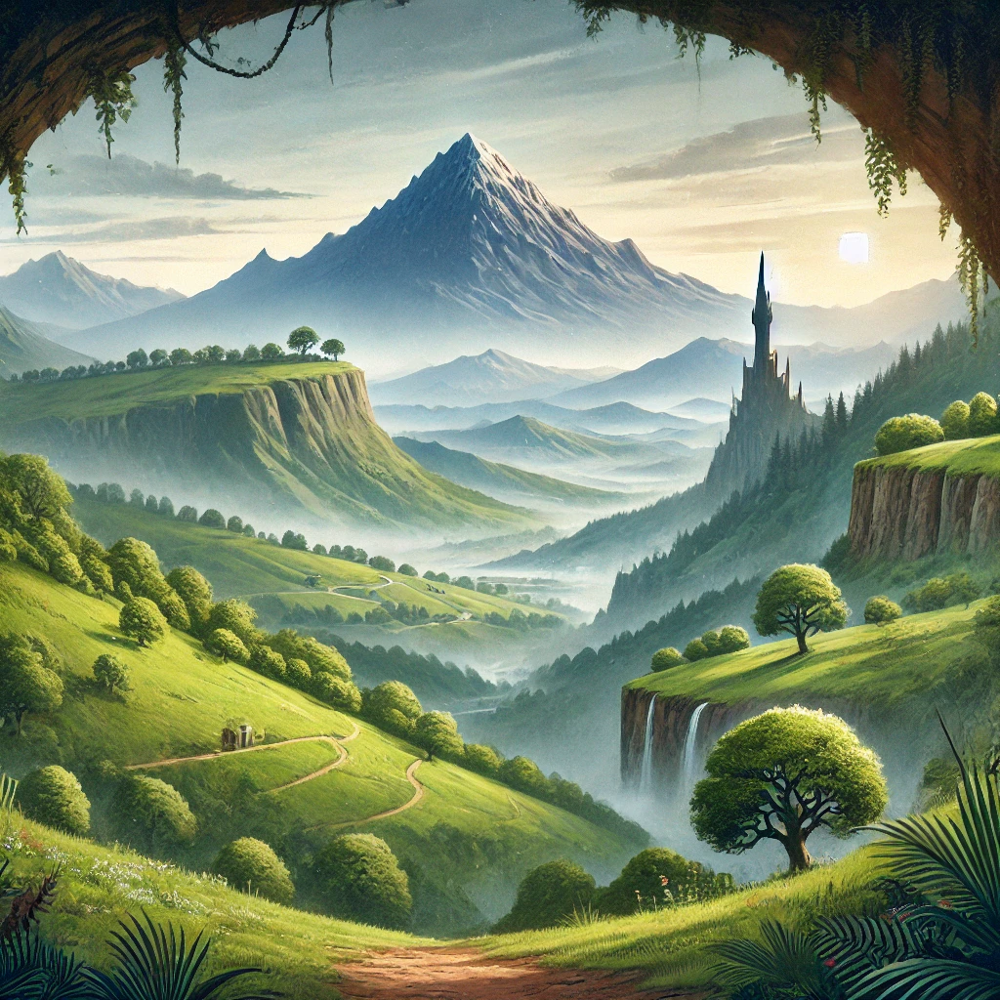
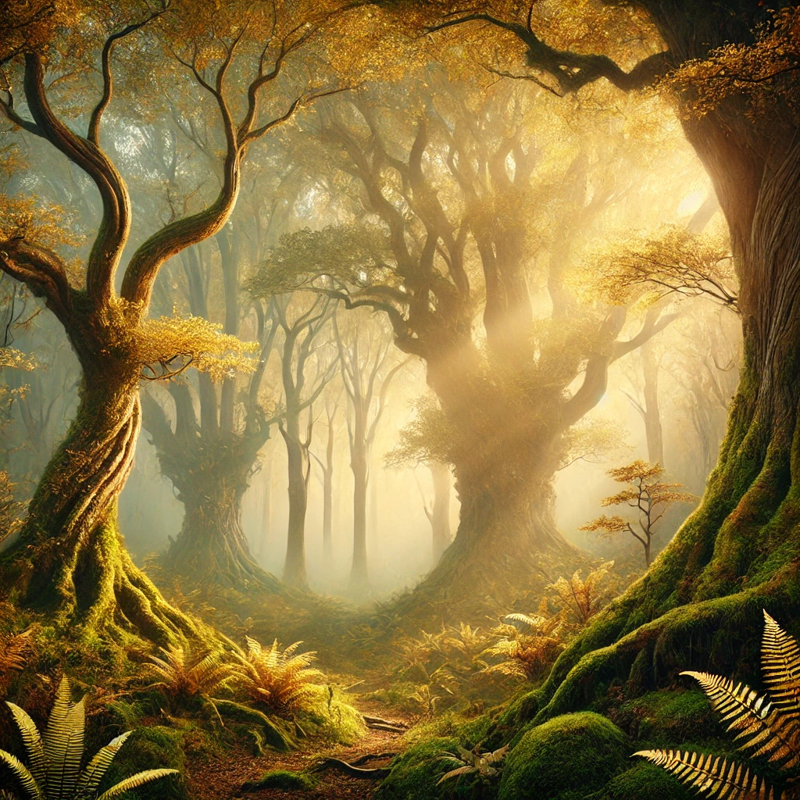

Paquetes de Viaje

La Ruta del Anillo
Desde La Comarca hasta el Monte del Destino, sigue los pasos de Frodo y la Comunidad del Anillo.

Expedición a las Montañas Nubladas
Explora las tierras del norte y descubre los secretos de las Montañas Nubladas.

Tour Élfico en Lothlórien
Una experiencia mágica en el reino de los elfos. Conoce sus misterios y su historia.